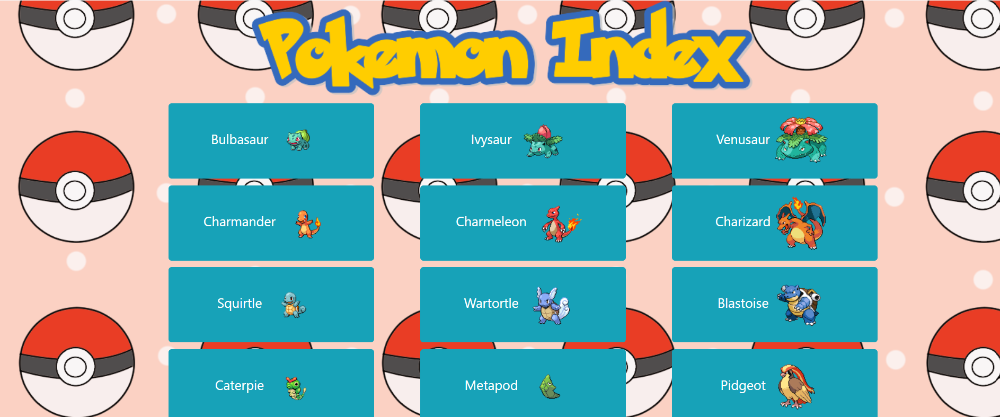
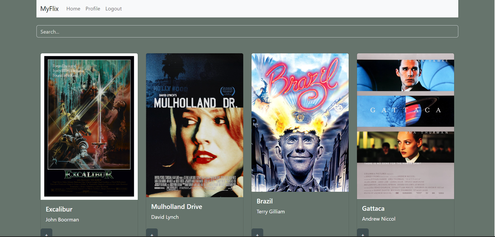
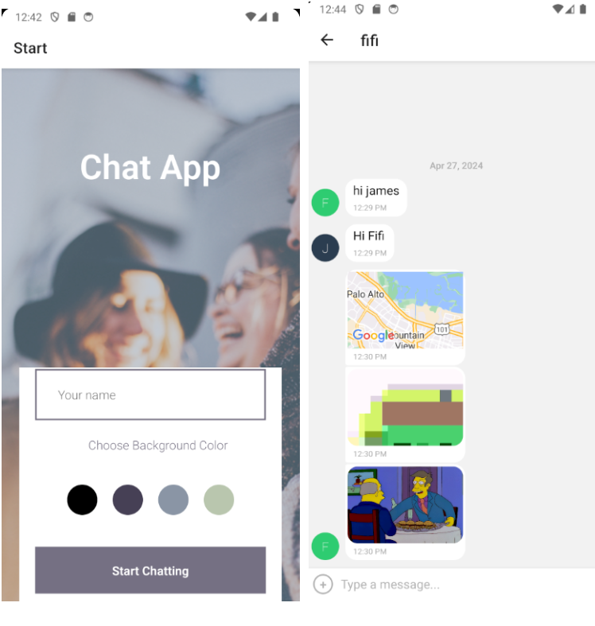
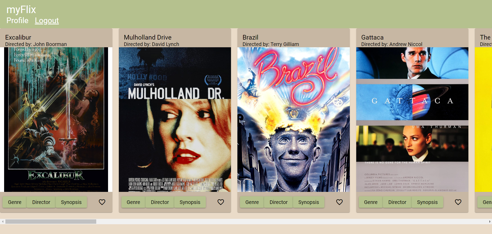

Welcome to my Portfolio Site!
My name is James Heald. I am a web developer from the United States, currently based in Poland.
Check out some of my codeAbout Me
Originally from California (San Diego and San Jose), I have spent the last 12 years traveling and teaching English all over the world. As rewarding as I have found this, I feel that now's the time to branch into Web Development.
I am currently living in Poland with my cat, Fifi.
Work
Pokedex App

A web application built using HTML, CSS and JavaScript that allows users to browse through 150 Pokemon and view information about each one by opening modals. The app uses the PokeAPI to fetch data about Pokemon and display it to the user.
View project on GitHubMyFlix App

A web application built using React that allows users create an account, login and browse through a collection of movies. They can view information about each movie, create a list of their favorite movies, and update their profiles. The app uses a RESTful API built using Node.js to fetch data about movies and users, and a NoSQL database (MongoDB) to store user and movie information.
View project on GitHubMeet App

A serverless, progressive web application (PWA) built using React and a test-driven development (TDD) technique that allows users to view a list of upcoming events, filter events by city, choose how many events are displayed, and view more information about each event. The app uses the Google Calendar API to fetch data about events and display it to the user and Recharts for data visualization.
View project on GitHubChat App

A real-time chat application built and developed using React Native, Expo, and Google Firebase. The app allows users to create an account, login, chat with other users, send photos from the users' gallery and camera, and provide a map of the users' location in real-time. The app uses Firebase to store user information and messages, and to authenticate users.
View project on GitHubMyFlix App 2

A web application built using Angular and TypeScript, and managed using a kanban board, with similar functionality to the first MyFlix app. It also uses data from the same RESTful API and NoSQL database created previously.
View project on GitHubContact
Orlat Lwowskich 6/1
51-318 Krakow
Poland
Phone: +48517378347
Skype: neither_here_nor_there
Email: jeheald23@gmail.com
Contact me